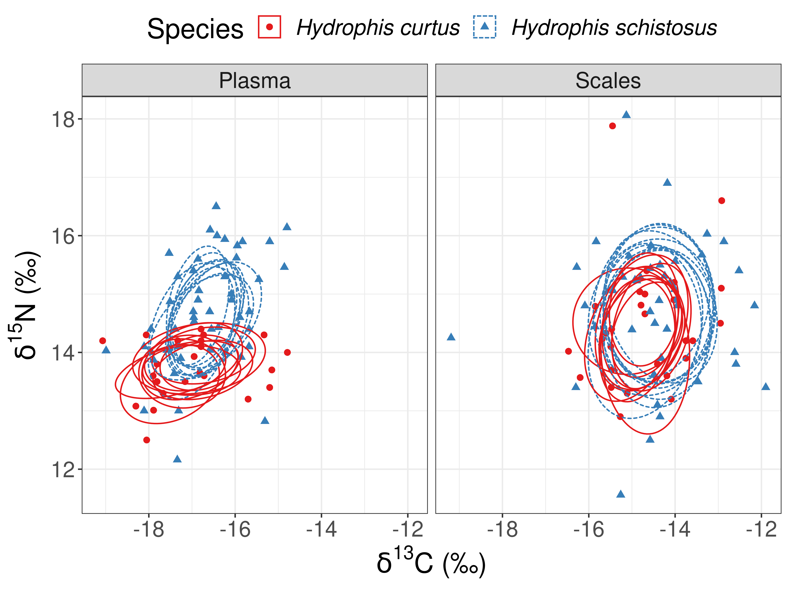

4 Difference in resouce use betweek H. curtus and H. schistosus
Carbon and Nitrogen isotope ratios were compared across snake species. Plasma and scale samples were used to compare short term and long term resource use respectively. Multiples metrics including niche width (SEA), variance (range), overlap (%) were used.
source("Functions/setup.R")
# importing stable isotope data
sia = read.csv("./Data/Stable Isotope Data_CEAS_final_191020.csv")
# joining SI data to snake data
sia_snakes = sia%>%
filter(Tissue.type != "Gut Content")%>% # removing prey SI data
left_join(snakes, 'Field.Code')%>%
mutate(Lab = "CEAS")%>%
# renamving variables for ease of understanding
dplyr::rename(Delta.Carbon = d13C..vpdb. , Delta.Nitrogen = d15N..N2.air.)%>%
# selecting relevant variables
dplyr::select(Field.Code, Species, Snout.to.Vent..cm., Sex, Gravid, Class,
Gear.Type, Fishing.Location, Depth.Caught..m.,
Plasma.Color, Delta.Carbon, Delta.Nitrogen, Lab,
Tissue.type, Month, Year)## Error: Can't subset columns that don't exist.
## x Column `Gravid` doesn't exist.# creating labels for figures
D.C = expression({delta}^13*C~'\u2030')
D.N = expression({delta}^15*N~'\u2030')4.1 Number of tissue samples analysed
sia_snakes%>%
filter(Tissue.type == "Plasma" | Tissue.type == "Scales")%>%
filter(Species == "Hydrophis curtus" | Species == "Hydrophis schistosus")%>%
group_by(Species, Tissue.type)%>%
count()%>%
spread(Tissue.type, n)| Species | Plasma | Scales |
|---|---|---|
| Hydrophis curtus | 28 | 35 |
| Hydrophis schistosus | 68 | 52 |
4.2 Summary statistics on Carbon and Nitrogen stable isotopes
Mean ± standard deviation (parts per mil)
sia_snakes%>%
filter(Tissue.type == "Plasma" | Tissue.type == "Scales")%>%
filter(Species == "Hydrophis curtus" | Species == "Hydrophis schistosus")%>%
gather(c("Delta.Carbon", "Delta.Nitrogen"), key = "Isotope", value = "value")%>%
group_by(Species, Tissue.type, Isotope)%>%
summarise(Mean = round(mean(value, na.rm = T), 2),
sd = round(sd(value, na.rm = T), 2),
n = sum(!is.na(value)))%>%
unite("Mean.sd", Mean:sd, sep = "±")%>%
dplyr::select(-n)%>%
spread(Isotope, Mean.sd)%>%
arrange(Tissue.type, Species)| Species | Tissue.type | Delta.Carbon | Delta.Nitrogen |
|---|---|---|---|
| Hydrophis curtus | Plasma | -16.98±1.08 | 13.92±0.76 |
| Hydrophis schistosus | Plasma | -16.74±0.92 | 14.73±1.25 |
| Hydrophis curtus | Scales | -14.68±0.99 | 14.44±1.02 |
| Hydrophis schistosus | Scales | -14.52±1.29 | 14.69±1.18 |
Both \(\delta^{15}N\) and \(\delta^{13}C\) were enriched in H. schistosus compared to H. curtus
4.3 Difference in niche width between sea snakes
We used the SIBER package (Jackson et al. 2011) for to compare isotopic niche width and overlap between H. curtus and H. schistosus.
# importing required libraries for stable isotope analysis
library(SIBER)
# Formating SI data for use with SIBER
siber_snakes <- sia_snakes%>%
filter(Tissue.type == "Plasma" | Tissue.type == "Scales")%>%
dplyr::select(Delta.Carbon, Delta.Nitrogen, Tissue.type, Species)%>% # selecting required variables
# renaming varibale as per requirement for SIBER
dplyr::rename(iso1 = Delta.Carbon,
iso2 = Delta.Nitrogen,
group = Tissue.type,
community = Species)%>%
# removing missing data points
filter(!is.na(group),
!is.na(iso1),
!is.na(iso2),
community == "Hydrophis schistosus" | community == "Hydrophis curtus")%>%
droplevels()
# Creating a SIBER object for analysis
siber.snakes = createSiberObject(siber_snakes)4.3.1 Maximum likelihood estimate of SEA
SEA.ML_snakes <- groupMetricsML(siber.snakes)
# Clean table
data.frame(t(SEA.ML_snakes))%>%
rownames_to_column("Species.Tissue")%>%
separate(Species.Tissue, c("Species", "Tissue"), sep = "([\\.\\?\\:])")%>%
arrange(Tissue, Species)| Species | Tissue | TA | SEA | SEAc |
|---|---|---|---|---|
| Hydrophis curtus | Plasma | 5.12750 | 1.734842 | 1.813699 |
| Hydrophis schistosus | Plasma | 11.77120 | 2.467868 | 2.520375 |
| Hydrophis curtus | Scales | 12.21050 | 3.126758 | 3.247018 |
| Hydrophis schistosus | Scales | 25.89415 | 4.550803 | 4.656636 |
As maximum likelihood can only porivde point estimates of SEA, a bayesian model was used to provide more robust comparison of niche width.
4.3.2 Bayesian estimate of SEA
We estimate the standard ellipse area (SEA) of each species in isotopic space by fitting a multivariate normal model to the isotope data using bayesian inference.
# Setting options for running jags
parms <- list() # list of parameters fir JAGS
parms$n.iter <- 2*10^4 # number of iterations to run the model for
parms$n.burnin <- 1*10^3 # discard the first set of 1000 values
parms$n.thin <- 10 # thin the posterior by this many
parms$n.chains <- 2 # run this many chains
# Defining vague priors
priors <- list()
priors$R <- 1 * diag(2)
priors$k <- 2
priors$tau.mu <- 1.0E-3
# Fitting the model and getting posteriors
snakes.post <- siberMVN(siber.snakes, parms, priors)
# estimating standard ellipse area from posteriors
SEA.B_snakes <- siberEllipses(snakes.post)
# Creating a table of posterior estiamtes of Standard ellipse area
ccc <- names(snakes.post)
colnames(SEA.B_snakes) <- ccc
SEA.B_snakesdf = data.frame(SEA.B_snakes, check.names = F)%>%
rowid_to_column(var = "run")%>%
gather(Species.Tissue, SEA.B, -run)%>%
separate(Species.Tissue, c("Species","Tissue"), sep = "([\\.\\?\\:])")# Summarising Bayesian estimate of SEA
SEA.B_snakesdf%>%
group_by(Species, Tissue)%>%
summarise(`Mean SEAb` = mean(SEA.B),
`Standard deviation` = sd(SEA.B))%>%
arrange(Tissue, Species)| Species | Tissue | Mean SEAb | Standard deviation |
|---|---|---|---|
| Hydrophis curtus | Plasma | 1.818377 | 0.3830205 |
| Hydrophis schistosus | Plasma | 2.529669 | 0.3635745 |
| Hydrophis curtus | Scales | 3.236839 | 0.6378212 |
| Hydrophis schistosus | Scales | 4.661281 | 0.7149562 |
4.3.3 Testing difference in species niche area by tissue type
SEA.B_snakesdf%>%
spread(key = Species, value = SEA.B)%>%
group_by(Tissue)%>%
summarise(`P(HS > HC)` = sum(`Hydrophis schistosus` > `Hydrophis curtus`)/n())| Tissue | P(HS > HC) |
|---|---|
| Plasma | 0.91250 |
| Scales | 0.93525 |
Hypothesis: H. schistosus SEA is larger than H. curtus
4.4 Visualising posterior ellipses to compare species isotopic niche
# how many of the posterior draws do you want?
n.posts <- 10
# decide how big an ellipse you want to draw
p.ell <- pchisq(1,2)
set.seed(1)
# a list to store the results
snake_ellipses <- list()
# loop over groups
## generating list with length groups*communities
for (i in 1:length(snakes.post))
{
# a dummy variable to build in the loop
ell <- NULL
post.id <- NULL
# randomly extracting parameters for n samples from posterior distribution
for ( j in sample(1:4000, n.posts)){
# covariance matrix
Sigma <- matrix(snakes.post[[i]][j,1:4], 2, 2)
# mean
mu <- snakes.post[[i]][j,5:6]
# ellipse points
out <- ellipse::ellipse(Sigma, centre = mu , level = p.ell)
ell <- rbind(ell, out) #ellipse points from current loop
post.id <- c(post.id, rep(j, nrow(out))) #adding loop number (rep)
}
ell <- as.data.frame(ell) # data frame of ellipse points from all draws
ell$rep <- post.id # adding draw id
snake_ellipses[[i]] <- ell # creading list of draws from each community.group
}
snake.ellipses <- bind_rows(snake_ellipses, .id = "id") # creating a data frame of post ellipse draws
# now we need the group and community names
# extract them from the ellipses.posterior list
group_comm_names <- names(snakes.post)[as.numeric(snake.ellipses$id)] # extractin community.group from posteriors
# split them and conver to a matrix, NB byrow = T
split_group_comm <- matrix(unlist(strsplit(group_comm_names, "[.]")),
nrow(snake.ellipses), 2, byrow = TRUE) # splitting communit and group
snake.ellipses$community <- split_group_comm[,1]
snake.ellipses$group <- split_group_comm[,2]
snake.ellipses <- dplyr::rename(snake.ellipses, iso1 = x, iso2 = y, Species = community, Tissue = group)
# Plotting 10 randomly sampled ellipses
siber_snakes%>%
rename(Species = community,
Tissue = group)%>%
ggplot(aes(iso1, iso2, col = Species))+
geom_point(aes(shape = Species), size = 2)+
ylab(expression(paste(delta^{15}, "N (\u2030)")))+
xlab(expression(paste(delta^{13}, "C (\u2030)")))+
geom_polygon(data = snake.ellipses,
mapping = aes(iso1, iso2, group = rep, linetype = Species, col = Species),
fill = NA)+
scale_color_brewer(palette = "Set1")+
facet_wrap(~Tissue)+
theme(legend.text = element_text(face = "italic"))
ggsave(last_plot(), filename = "./Figures and Tables/figure3.tiff", height = 6, width = 8)Figure 3: Bayesian ellipses in isotopic space describing difference in niche width and resource use between H. curtus and H. schistosus.
4.5 Relative overlap in bayesian standard ellipses
# Overlap in ellipse based on plasma samples
snake.p.overlap <- bayesianOverlap(ellipse1 = "Hydrophis schistosus.Plasma" , #Group 1
ellipse2 = "Hydrophis curtus.Plasma", #Group 2
snakes.post, #list with posteriour dists
draws = 100, p.interval = 0.95, n = 100) #params
snake.p.overlap <- snake.p.overlap%>%
mutate(Turnover = "Short-term") # plasma represents short - term turnover in isotope ratios
# Overlap in ellipse based on scale samples
snake.s.overlap <- bayesianOverlap(ellipse1 = "Hydrophis schistosus.Scales" , #Group 1
ellipse2 = "Hydrophis curtus.Scales", #Group 2
snakes.post, #list with posteriour dists
draws = 100, p.interval = 0.95, n = 100) #params
snake.s.overlap <- snake.s.overlap%>%
mutate(Turnover = "Long-term") # scales represent long term turn over in isotope ratios
# Creating a combined data frame
snake.overlap <- bind_rows(snake.p.overlap, snake.s.overlap)
# Plotting overlap
snake.overlap%>%
mutate(prop.overlap = overlap/(area1 + area2 - overlap))%>% #relative overlap
ggplot(aes(prop.overlap))+
geom_histogram(bins = 10, col = "black")+
#geom_vline(aes(xintercept = mean(prop.overlap), col = "red"), size = 1)+
labs(x = "Proportion of overlap", y = "Number of samples")+
scale_color_discrete(name = "Mean")+
facet_wrap(~Turnover)
# summarising overlap in standard ellipses
snake.overlap%>%
group_by(Turnover)%>%
# calculating relative overlap in bayesian standard ellipses
mutate(prop.overlap = overlap/(area1 + area2 - overlap))%>%
summarise(`Average overlap` = mean(prop.overlap),
`Standard deviation` = sd(prop.overlap))| Turnover | Average overlap | Standard deviation |
|---|---|---|
| Long-term | 0.6201434 | 0.1077329 |
| Short-term | 0.4279571 | 0.0620247 |
4.6 References
Section 4.3.2 was adapeted from Andrew Jackson’s Github example.
Section 4.4 was adapted from the SIBER Vignette.
Section 4.5 was adapted from this Vignette.